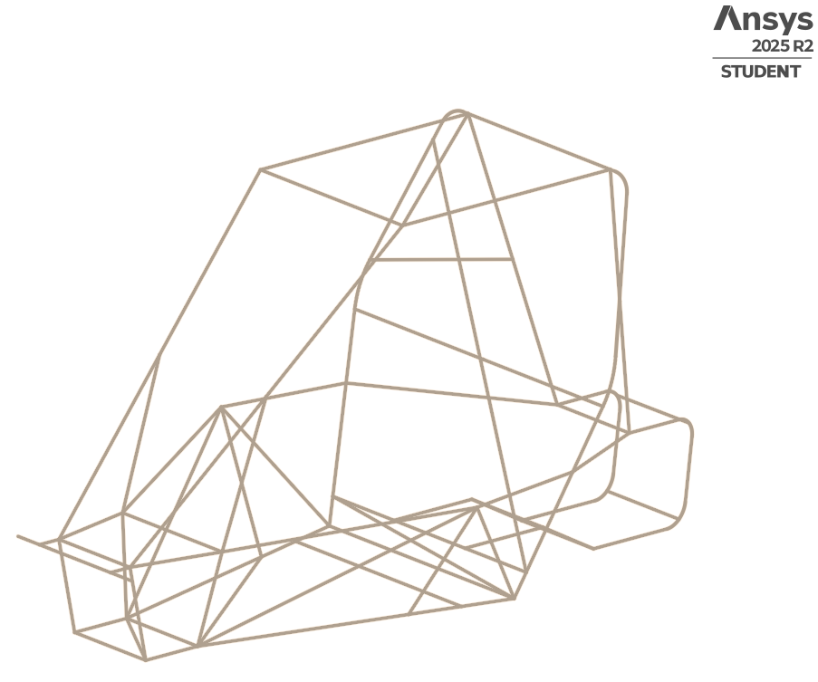
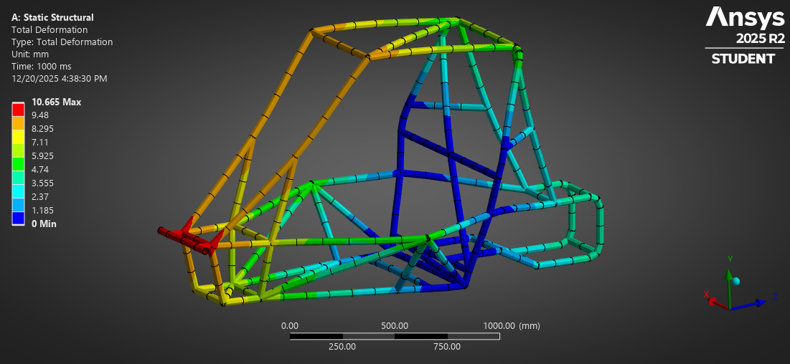
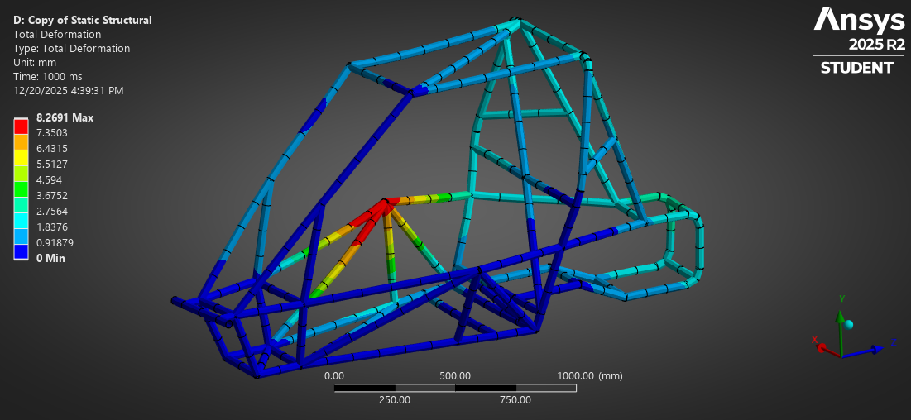
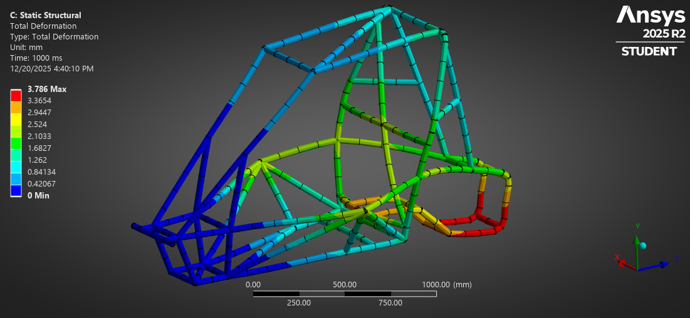
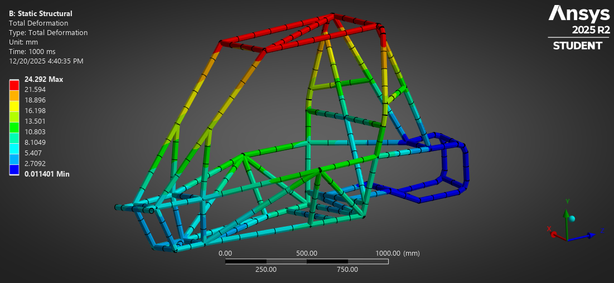

ANSYS Innovation Space — Completed Guided Simulation Course
The chassis and roll cage form the primary structural backbone of a Baja SAE vehicle, supporting drivetrain, suspension, and safety systems while protecting the driver. This project focuses on finite element analysis of a tubular roll cage to evaluate structural stiffness, load paths, and stress distributions under representative competition load cases.
While the baseline geometry was provided as part of an ANSYS instructional course, all geometry preparation, material definition, boundary conditions, and load applications were completed independently within ANSYS Mechanical.
The roll cage geometry was imported as a line body network and cleaned to remove false intersections and redundant connections. Pipe cross-sectional properties were assigned to all members to accurately represent the tubular frame structure.
Cleaned roll cage line geometry with assigned tubular cross-sections.
A frontal impact load was applied at the forward-most nodes of the roll cage while rear support locations were constrained to simulate load transfer during a frontal collision.
Total deformation under frontal impact loading.
Side impact loading was applied laterally to evaluate the roll cage’s ability to resist intrusion and maintain occupant protection during side collisions.
Total deformation under side impact loading.
Rear impact conditions were simulated by applying longitudinal loads at the rear of the chassis while constraining the front structure.
Total deformation under rear impact loading.
Opposing vertical forces were applied at the suspension mounting locations to evaluate torsional stiffness of the roll cage under uneven terrain and dynamic loading.
Total deformation under torsional loading.
Rollover loading was applied to simulate vehicle inversion scenarios and assess stress distribution throughout the primary and secondary structural members.
Rollover load case showing equivalent stress distribution in the roll cage. This animation illustrates load transfer paths through the primary and secondary structural members under simulated rollover conditions.
Across all load cases, the roll cage demonstrated effective load redistribution through triangulated members, with peak stresses occurring near major joints and suspension interfaces. Deformation patterns aligned with expected structural behavior for tubular spaceframe designs.
These analyses highlight the importance of load path continuity, joint integrity, and member orientation in achieving stiffness while minimizing unnecessary mass.
The workflows developed in this guided project will be applied to future fully custom chassis designs, specifically Shell Eco-Marathon vehicles. Future efforts will incorporate manufacturing constraints, joint optimization, and correlation with physical testing data where available.